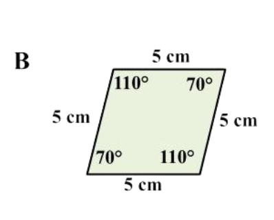
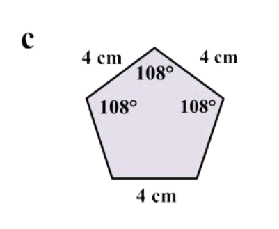
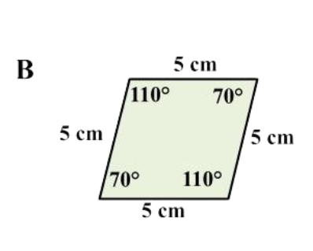
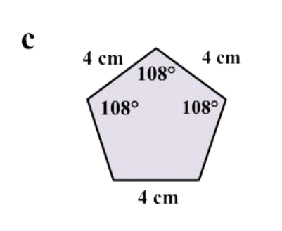
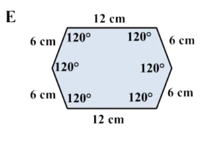

Ulasan
Segi Banyak Beraturan
Bangun datar yang memiliki sisi-sisi sama panjang
dan sudut-sudut sama besar.
Pilihlah semua segi banyak beraturan di bawah ini.
*Klik huruf untuk jawaban yang benar.
 



